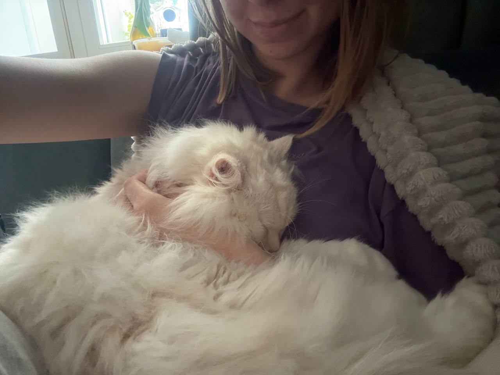
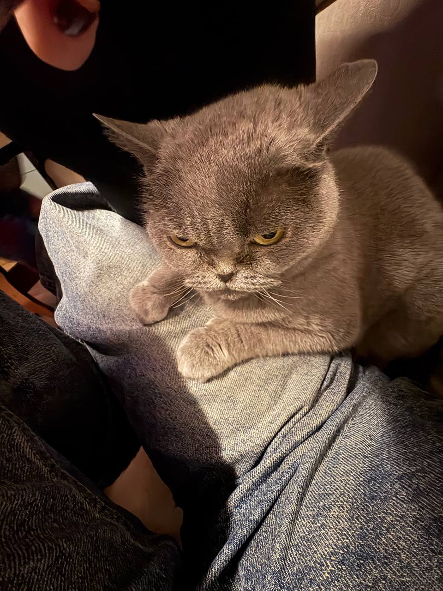
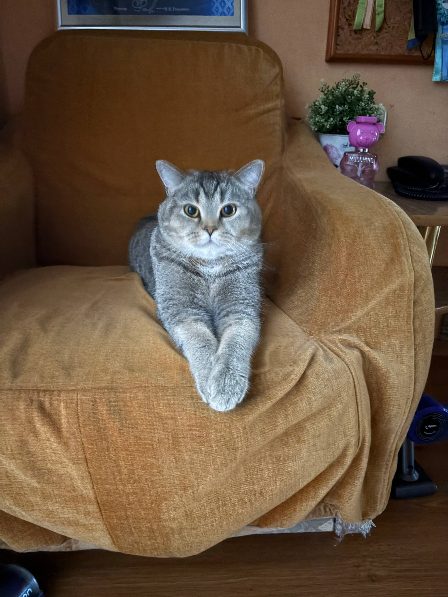

Обязанности по дому каждого кота
Каждый уважающий себя кот должен выполнять важнуюмиссию - помогать жить правильно. Ниже приведен список основныхобязанностей.
- Кот должен отсыпаться за человека , всех его родственников, друзей и
соседей вместе взятых.
- Кот должен защищать человека от комнатных растений.
- Кот постоянно должен поддерживать человека в форме, заставляя его
непрестанно двигаться по квартире, нагибаться, собирая ручки, карандаши,
носки и т. д.
Кот должен крепко держать зубами ручку или карандаш, пока человек
пытается писать.
Кот постоянно должен проводить ревизию в холодильнике , даже если
человек этого не хочет. Если он не хочет, значит, что-то там прячет, и с этим
что-то следует хорошенько разобраться, а потом уж призвать к ответу самого
человека.
- Кот должен ночью каждый час проверять, не заползла ли под одеяло
человеку какая-нибудь змея.
- Кот время от времени должен тренировать себя на случай непредвиденного
циркового выступления. Для этого он должен периодически устраивать
полеты под куполом дома, прыжки с гардины на люстру и обратно и другие
всевозможные запрыгивания.
- Кот должен помогать человеку стелить постель, внимательно наблюдая,
чтобы под простыней не оказалось никаких предметов.
- Кот должен помнить, что сон для человека – это пустая трата времени,
поэтому, завидев спящего человека, необходимо тут же его разбудить,
прыгнув ему на живот, а еще лучше на голову
- Кот должен каждое утро напоминать человеку старую пословицу: «Кто рано
встает, тому Бог дает». И чем раньше встанет человек, тем больше ему (а
заодно и коту) даст Бог.
- Кот должен делиться с человеком всем, что у него есть. Постоянно отдавать
часть меха на утепление одежды и пола и выкидывать половину еды из
чашки
- Кот должен петь песни, чтобы доставлять человеку радость. Даже если
песни грустные.
- Кот должен проверять, по какой причине кто-то не закрыл шкаф или
тумбочку и не задвинул ящик
.
- Кот должен отгонять от человека плохие сны. Если кот заметит, что человек
ворочается в постели, он непременно должен прыгнуть человеку на голову и
начать отгонять дурные сны и кошмары
- Кот должен знать, что лежит во всех коробках и пакетах. И на личном опыте
убедиться, насколько там удобно и хорошо находиться
- Кот должен во время сна человека заглушать наружный шум, громко урча
под ухом
Мои любимки
Знакомьтесь, это моя банда
Ева- самая мурчащая кошка в мире

Алабай- самый пушистый и добрый кот.

Эся- кошка аристократка

Аппа- просто задира
Что любят делать мои котики
- Спать на подоконнике
- Проверять коробки и пакеты
- делать тыгыдык ночью по мне
- прыгать и висеть на шторах
Если хотите узнатьбольше о жизнни котиков и их хозяйки, нажимайте сюда